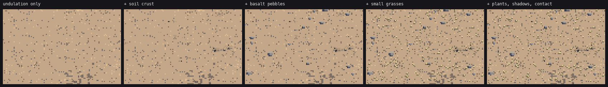
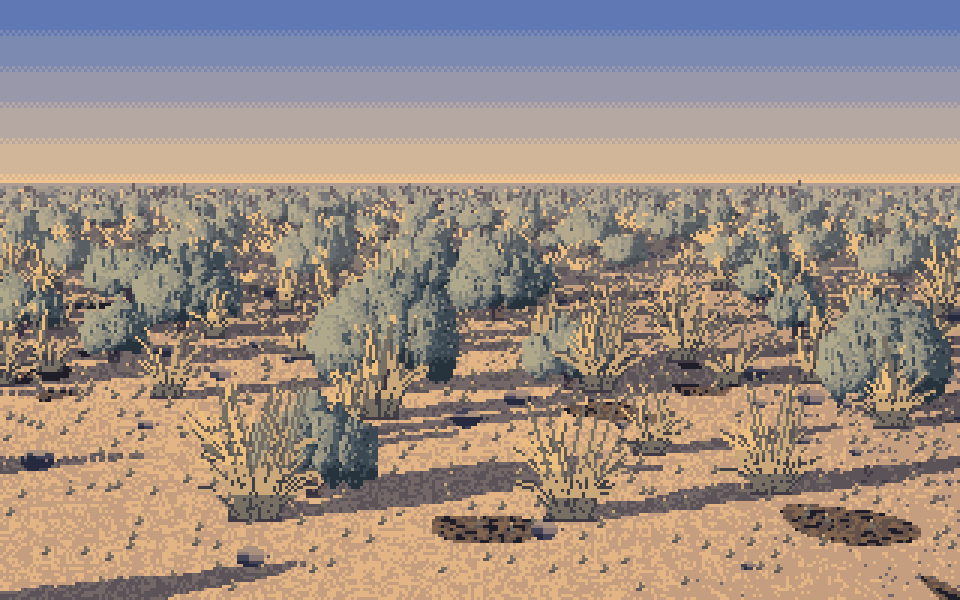
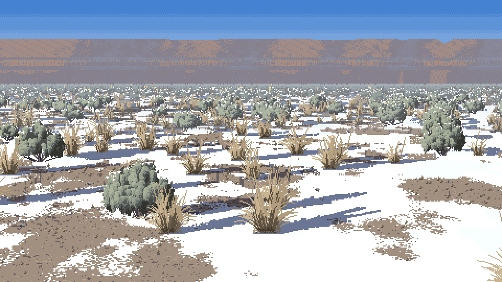

6. Ground, shadow, contact, snow
The ground and its shadows are ready. The snow is partial: it wraps the shrubs in the standing view, but its patches are still ruled in iso.
Calm ground, in world space
The steppe floor is most of the picture, so it has to be quiet. My first ground had every pixel dithered between two steps plus salt and pepper, and it was louder than the plants:

The first iso scene, cropped. The ground has the same contrast as the sage, and the bushes dissolve into it.
Ferrari's ground (V16PM's bank, V11AM's apron) is mostly flat, with value masses that meet on a broken edge and a few deliberate specks. world.paint_ground does that, and does it in world space: every noise is a function of the ground point (X, Z) in metres, sized in pixels through the local pixels-per-metre ppm, so the texture doesn't swim when the camera moves or zooms:
X, Z = cam.ground_xz(xs + 0.5, ys + 0.5)
ppm = cam.ppm_at(Z)
und = (fbm(X, Z, 6.0, seed + 1) - 0.5) * 2 * gp["undulation"] # 6-m value masses
base = 3.0 + und
brk = vnoise(X, Z, np.maximum(0.03, 2.0 / ppm), seed + 13) - 0.5 # ~2-px break on their edges
step = np.clip(np.floor(base + brk * 0.5 + 0.5).astype(np.int16), 2, 4)
r1 = vnoise(X, Z, np.maximum(0.02, 0.7 / ppm), seed + 2)
r2 = vnoise(X, Z, np.maximum(0.02, 0.7 / ppm), seed + 12)
step = np.where((r1 > 0.86) & (ppm > 3), step - 1, step) # sparse dark specks
step = np.where((r2 > 0.9) & (ppm > 3), np.minimum(4, step + 1), step) # sparser light ones
The noise primitives (world._hash, vnoise, fbm) are hashed integer lattices, so a point always gets the same value whatever the canvas. On top of the base go four layers:

figs.fig_ground: undulation → + soil crust → + basalt pebbles → + small grasses → + plants, shadows and contact.
- Soil crust (the dark living skin of cyanobacteria and moss between plants, from the plant desk's guide 09): patches of a 0.9-m fbm, three lumpy dark values. The patch edge is broken by a pixel-scale noise and a little white noise, so it fades out through density. My first crust patches were clean ellipses and dithered discs, and the critic called them "stickers" and "decals":

persp_b: the two dark ovals in the near field.
- Pebbles: sites on a 0.35-m world grid, drawn only where their radius is at least half a pixel. Each has a light top row, a darker bottom, a darker shadow side, and one pixel of ground two steps darker on the side away from the sun.
- Small grasses (Sandberg bluegrass, cheatgrass): sites on a 0.12-m grid, drawn as 1-to-4-px upright ticks only when they're at least a pixel tall.
At the default crust setting the crust is too subtle to read at 3× in this figure. It shows in the scenes as darker ground between shrubs. The pebbles are the one layer that's a bit loud.
The shadow is the ground two steps down
This one I took from the willow student's critic, whose flat grey ellipses read as holes. A cast shadow isn't a shape laid on the ground. It is the same ground, the same pebbles and crust, two steps darker. scene._cast_shadow projects every pixel of a sprite's silhouette along the sun onto the ground plane, through the real camera:
dxw, dzw = -Lw[0], Lw[2] # horizontal shadow direction (away from the sun)
k = 1.0 / max(0.12, Lw[1]) # shadow length per metre of height
hgt = (by - ys) / (ppm * cz) # each silhouette pixel's height above the foot, in metres
lat = (xs + ox - cam.project(X, Z)[0]) / ppm
SX = X + lat + hgt * k * dxw
SZ = Z + hgt * k * dzw
px, py = cam.project(SX, SZ)
...
sel = mark & ~_shadow_done # each ground pixel darkens once, however many shadows overlap
cv.step[sel] = np.maximum(0, cv.step[sel] - 2)
Because it goes through the camera, the same code gives long raking shadows at golden hour in the standing view and short foreshortened slabs in iso. The _shadow_done mask stops two overlapping shadows from making a black patch. Shadows are painted before any sprite, so plants stand on their own shadows.
Contact
After each shrub or tree is blitted, the ground pixel directly under every foliage column in its bottom two rows goes to step 0: the darkest line at the foot (SYNTHESIS: "a flat run with a 1-px darker contact line"). Grass sprites don't get one. A dark line under every tussock was part of the grey-comb look on page 4.
if m.any() and spr.w > 6 and (spr.mat[m] != GRASS).mean() > 0.5: # shrubs and trees only
ys, xs = np.nonzero(m)
by = ys.max()
for xx in np.unique(xs[ys >= by - 1]):
gx, gy = xx + ox, by + oy + 1
if 0 <= gx < W and 0 <= gy < H and cv.mat[gy, gx] in (GROUND, CRUST, STONE):
cv.step[gy, gx] = 0
Snow that wraps the plants

Seasons, first version: the winter panel's snow patches have ruled horizontal edges (critic, round 5).
Snow on the steppe drifts against the lee side of each shrub and melts back first on its sunny side. So the patch edges follow the plants. The ground's snow field got two more noises (a pixel-scale break and 0.35-m lobes), and scene._snow_drifts adds, per shrub, an irregular lens of snow hugging the foot on the side away from the sun and a bare melt-back on the sunny side:
lee = 1 if Lw[0] < 0 else -1 # the side away from the sun
cxd = (x0 + x1) / 2 + lee * wid * 0.35
rx, ry = wid * (0.45 + 0.3 * amount), max(1.0, wid * 0.10)
... if u * u + v * v < 1 + rng.normal(0, 0.15): -> SNOW (shaded step above the foot line, lit below)
cxs = (x0 + x1) / 2 - lee * wid * 0.45
... SNOW -> GROUND with probability 0.8 in a box on the sunny side

The winter hero: blue shadows on snow, drifts against the shrubs, bare patches with broken edges.
Where it falls short
- Iso snow is still ruled. In sheet G's winter column the patches are long horizontal slabs. My reading of why (not yet tested): the ground noises are isotropic in metres, but iso squashes Z by sin 30°, so a round patch becomes a flat lens, and at 12 px/m the break noise is too fine to matter. The fix is to stretch the snow field's Z scale by 1/sin(el) in iso, so its patches come out round on screen.
- The melt-back box on the sunny side is a box, and at hero size you can see it.
- Pebbles: at 24 px/m the basalt pebbles are the loudest thing on the ground, the same contrast as the plants.